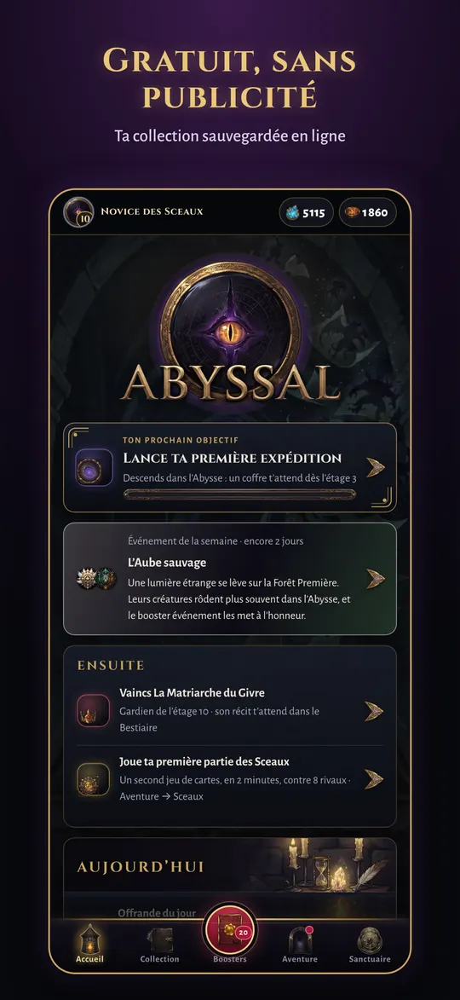
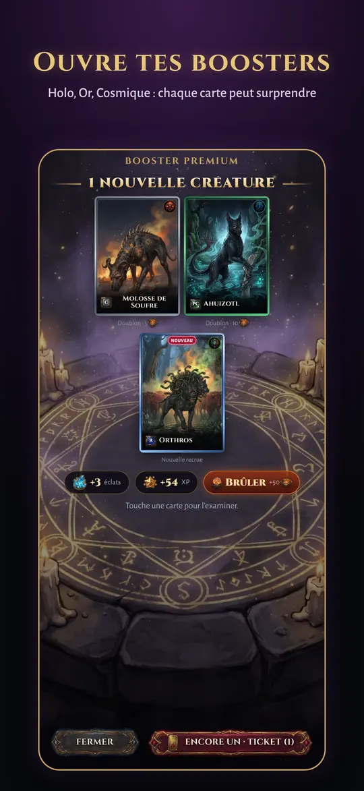
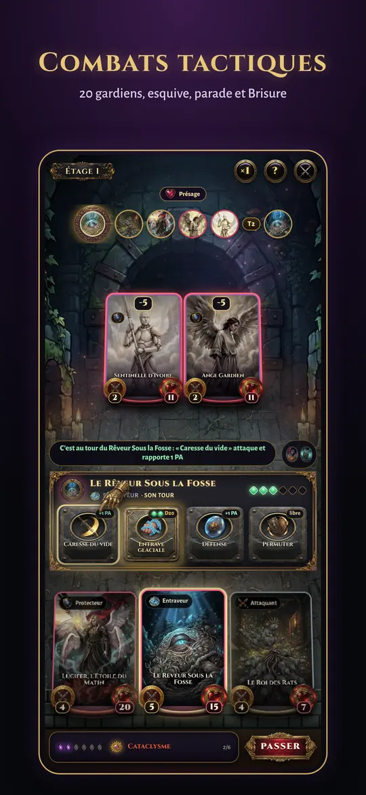
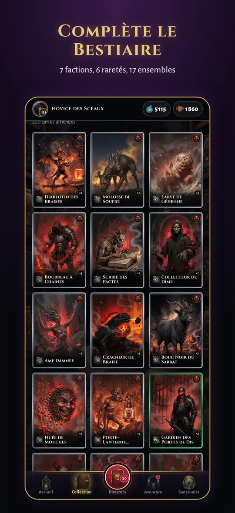
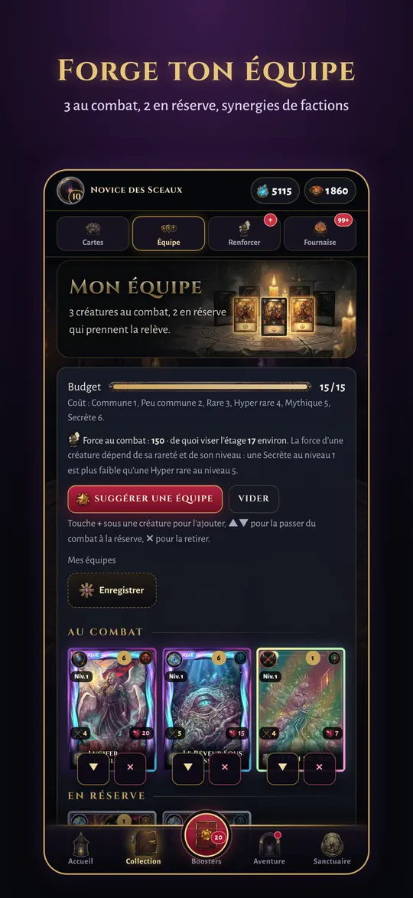
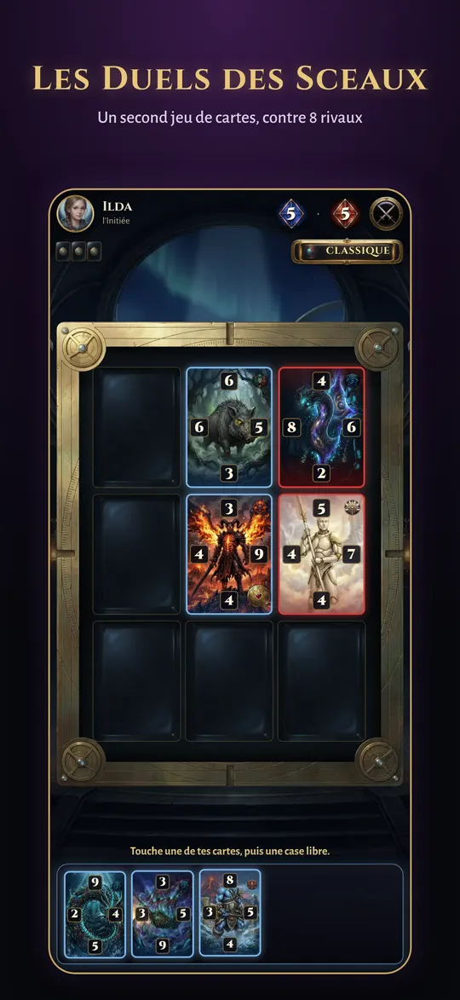
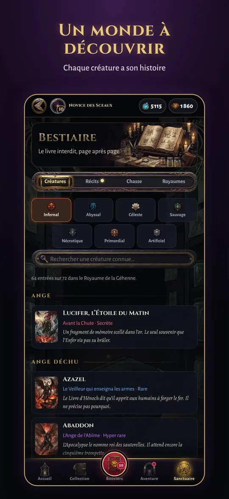
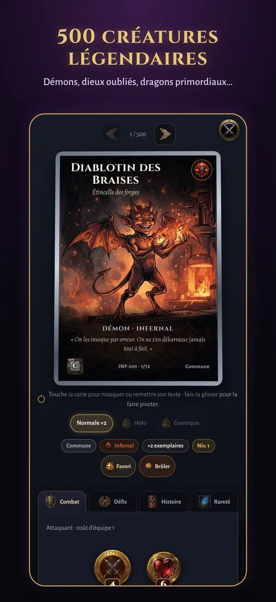

ABYSSAL — Le Bestiaire interdit

Un jeu de cartes à collectionner dark fantasy. Ouvre des boosters, rassemble 500 créatures tirées des mythes et descends dans l’Abysse, étage après étage.
- Gratuit
- Sans publicité
- Toutes les cartes se gagnent en jouant
- Aucun achat qui rend plus fort
Le jeu en images








Ce qui t’attend
500 créatures à collectionner
Démons, anges déchus, dieux oubliés, dragons primordiaux, golems, spectres… 7 royaumes, 6 raretés, et des finitions Argentée, Enluminée et Abyssale.
La Descente
100 étages et 20 gardiens jusqu’au fond de l’Abysse. Chaque chapitre raconte une page du Bestiaire interdit.
Des combats tactiques
Une équipe de 5 créatures, chacune avec son rôle. Pare au bon moment, brise les défenses, enchaîne les coups : le talent compte autant que tes cartes.
La Salle des jeux
Les Duels des Sceaux, le Pacte, les Cryptes et les Enchères de Mammon : quatre jeux de cartes, huit adversaires, un défi par jour.
Tes amis
Ajoute tes amis grâce à leur pseudo et découvre leur collection, leurs succès et leurs exploits.
Épreuves du jour
Trois combats chaque jour, les mêmes pour tous, et un classement.
Une question ?
Consulte la page Aide, ou écris-nous à contact@abyssal-game.fr.